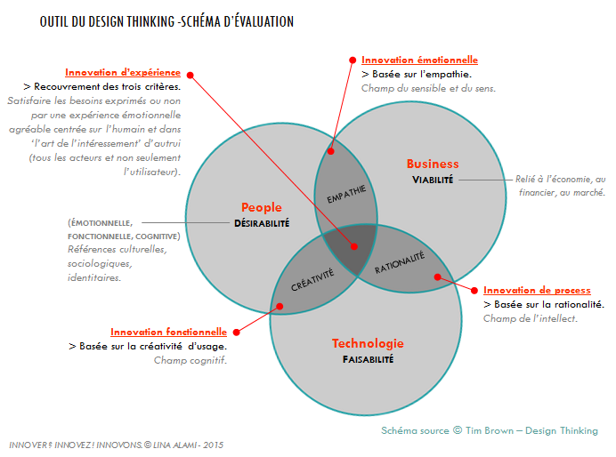
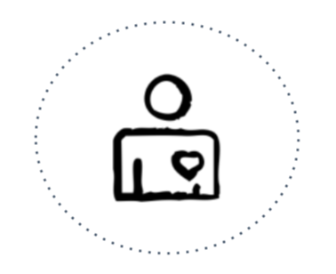
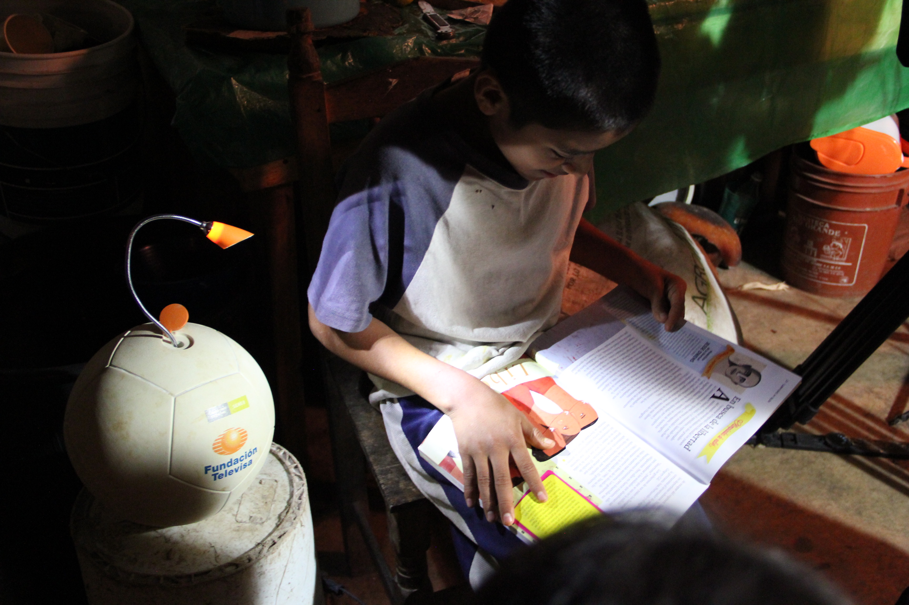
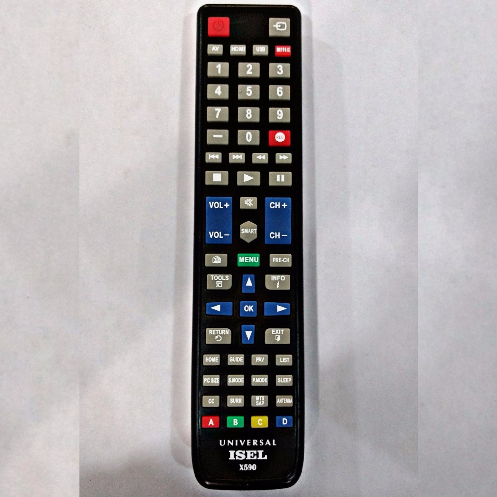
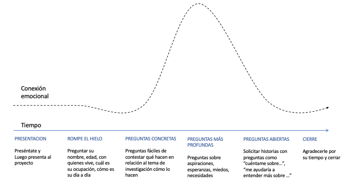
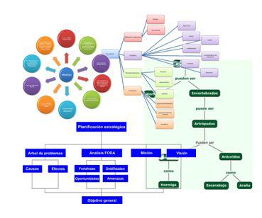

Design Thinking
Parte Uno
Innovación
¿Qué es la innovación?
Innovar es realizar algo nuevo y diferente, que tenga impacto.
Anthony D. Scott¿Son todas las innovaciones iguales?
Hay distintos niveles de innovación
Marginal
Mejorar la propuesta de valor actualIncremental
Ampliar la propuesta de valor existente (nuevas funcionalidades)Radical
Diseñar una nueva porpuesta de valorEjemplo de Innovación marginal

Ejemplo de innovación incremental

Ejemplo de innovación radical

No hay correlación directa entre impacto y cambio, depende del contexto.
Hay distintos niveles de innovación
Marginal
Mejorar la propuesta de valor actual
Incremental
Ampliar la propuesta de valor existente (nuevas funcionalidades)
Design Thinking
Radical
Diseñar una nueva porpuesta de valor
Consigna:
Vuelvan a su zapatilla, ahora identifica tu usuario objetivo, y piensa si has realizado una mejora:
-
Marginal
Hacer lo mismo que antes pero mejor
-
Incremental
Agregar nuevas funcionalidades/características
-
Radical
Hacer algo nuevo
"Todo quien idea curso de acción apuntando a cambiar situaciones existentes por preferentes, diseñan"
Herbert Simon¿Por qué se volvió tan importante innovar?
vivimos en el siglo
VUCA
- V: La volatilidad de los hechos
- U: La incertidumbre alrededor de una causa conocida
- C: La complejidad de muchas variables interconcetadas
- A: La ambigüedad entre conexiones y causas
Época de cambio exponencial
9,223,372,036,854,780,000
Granos de arroz
461,168,602,000
Toneladas de arroz
"No hay razón para creer que la gente quiera tener una computadora en su casa"
Ken Olson, Presidente de DEC, 1977
Ordenador Apple II, desarrollado por Steve Jobs y Steve Wozniak en un garaje.

2007 Laptop DELL con primer sistema Linux integrado

2017 Iphone 7 plus con apple watch interconcetado en la nube
"El cambio nunca va a volver a ser tan lento"

¿Qué oportunidades presenta este contexto?

Ofertas que disminuyen la asimetría de la información
Ofertas que tienden a costos marginales cercanos a cero
Crear mercandos: co-living
Inteligencia colectiva: Plataformas participativas
Lego IdeasEntonces, ¿por qué cuesta innovar?
La información
NO es suficiente para generar
cambios de comportamiento
Teorías del comportamiento
Video
Islandia la intención es que coductores reduzcan la velocidad en las aréas residenciales y reducir así los accidentes
En Londres, en el metro de Embankment
Design Thinking
Parte Dos
Introducción
Design Thinking
Design thinking es una metodología ágil de innovación centrada en las personas.
Cuando decimos innovación centrada en la persona,
¿Qué viene primero, la idea o el usuario?
¿En donde empezar?
Elementos Clave
-
Empatía
Empezamos por lo que las personas, usuarios o consumidores necesitan o quieren hacer. Sus motivaciones y los problemas que buscan resolver. -
Fuera de la caja
Design thinking estimula a mirar situaciones de modo diferente y encontrar nuevas soluciones que van más allá y mejoran las alternativas exitentes. Necesita la habilidad de mirar todos los aspectos diferentes de un problema. -
Experimentación
Dejá de discutir, empezá a trabajar. Hacé las ideas tangibles. Prototipar es pensar con tus manos. Fallar es una parte necesaria del proceso para tener éxito. Experimentar con prueba y error es clave. -
Iteración
El camino al éxito no sigue una línea recta. Cuando más dispuesto a transitar el camino de "entender>crear>aprender" estés, más chances de tener buenos resultados vas a tener.
¿Cómo es el proceso?
¿Cómo es el gran cambio de prespectiva?
Nuevo MindSet:
Centrado en el usuario
Casos Reales
Que pensaron primero en el usuario y su contexto
¿Cómo podríamos mejorar el acceso a medicamentos en lugares remotos?
¿Cómo podríamos hacer para que los chicos le pierdan el miedo a la resonancia magnética?
¿Cómo podríamos desarrollar energía renovable que mejore la calidad de vida?
Elegir el desafio
Para aplicar la metodología de Design Thinking y generar el proceso desde el usuario.
Diseñar una solución para mejorar uno de estos 2 temas:
-
Interno
Ejemplos: Selección de personal en tu empresa / Formación continua de tus equipos / Trabajo entre áreas -
Externo
Ejemplos: Desarrollo de nuevos servicios / Captar a un nuevo usuario o cliente / Mejorar competitividad frente a competencia
Empatizar
El proceso de Design Thinking comienza con la empatía
Empatizar implica ponernos en los pies de nuestro usuario para entenderlo. Para ello, tenemos que observarlo, entrevistarlo, seguirlo, hacer lo que él hace
Los problemas de mis usuarios son mis problemas
¿Qué pasa cuando pensamos en la idea antes de testear con el usuario?
Recuerden: no hay innovación sin un usuario
¿Cual es el primer paso?
Primer paso: IDENTIFICAR AL USUARIO OBJETIVO
Muchas veces los procesos de creación funcionan a la inversa, diseñamos productos y servicios que suponemos le hacen falta a alguien y luego buscamos un cliente para crearle esa necesidad
¿Cómo llegamos a descubrir una necesidad?
Nos permite trabajar:
- Qué - Características del producto/servicio
- Cómo - Experencia de uso
- Por qué - Utilidad vinculada a la necesidad
El usuario va a aceptar un cambio de características y de experiencias siempre que esto le posibilite alcanzar mejor su utilidad.
Metodología de investigación
¿Con qué técnicas descubrimos?
-
Observador
Al usuario (Observación Partícipe/Shadowing) -
Ser
El usuario (Mystery Shopper) -
Hablar
Con el usuario (Entrevistas en profundidad semiestructuradas)
Entrevista en profundidad
¿A quiénes?
Una vez que indentificamos a nuestro usuario objetivo
¿A cuántas personas entrevistamos?
¿Cómo empezamos?
Diseño del camino
Detectar
Transformar las historias en oportunidad de innovación
Un error comun es empezar a dar soluciones sin identificar correctamente el problema
Las observaciones, visitas de campo, o una entrevista en profundidad pueden servir para encontrar un significado más profundo y oportunidades de diseño accionables, pero esto no es una tarea sencilla.
Hay que identificar patrones de conducta.
Si mi vida dependienta de solucionar un problema, y tuviera una hora para hacerlo, gastaría los primeros 55 minutos en determinar la pregunta correcta para hacer, para poder responderla en menos de 5 minutos
¿Cómo operacionalizar la información?
Compartir hallazgos
Sumergite en los resultados
-
Hechos
Datos relevantes para entender el contexto o al usuario
-
Pain Points
Punto de dolor o situaciones no deseadas
-
Bliss Points
Punto de felidad o situaciones deseadas
-
Workaround
Soluciones informales a problemas
-
Dilemas
Cuando se desan dos cosas que parecen incompatibles
-
Ideas
Soluciones que los usuarios proponen
Organizar la información
Cuando empezamos a ver toda la información junta podemos reconocer los patrones sociales de conducta, que es la información más valiosa con la que vamos a trabajar. A veces hay diferencias que pueden ser llamativas, esas también las podemos incluir.
Identifica patrones y diferencias que pueden ser oportunidades
Usa marcos de referencia (frameworks): definir prioridades entre los patrones de conducta
ORGANIZAR Busca el recurso de visualización más fuerte, que mejor les sirva.
Extraer Insights
Los insights con una síntesis, una expresión concisa de lo que se ha aprendido a través de la investigación.
Síntesis es el arte de generar-sentido, encontrando patrones para orientar decisiones.
Son hallazgos que representan información inesperada, y son el catalizador para nuevas ideas.
Idear
PROPONER SOLUCIONES
Creatividad
¿Por qué se volvio importante ser creativos?
Siglo VICA
- Volátil
- Incierto
- Complejo
- Ambiguo
En un mundo donde el futuro es más impredecible que nunca, la creatividad es la clave para poder navegar eventos disruptivos e inesperados.
"La creatividad no sólo para artistas, es vital para las organizaciones, se vuelve un pre-requisito para el desarrollo de un crecimiento sostenido."
Ben de Vries, EricssonEjercicio
Dibujar 18 circulos iguales
Tienen 5 minutos para completar sus circulos
TemporizadorReglas de un Brainstorming:
- Multiplica ideas: si quieres tener una buena idea es más probable que llegue si tienes muchas.
- No juzgues: nosotros mismos somos los primeros en juzgarnos y matamos las ideas antes de que nazcan. No hay malas ideas en este momento.
- No intentes racionalizar: las ideas raras pueden disparar algo en las ideas de otros y ahí puede salir algo valioso.
- Intenta mantener el foco: las ideas locas son bienvenidas, pero que no se alejen del tema principal y de resolver la problemática del usuario.
- Intenta mantener el foco: las ideas locas son bienvenidas, pero que no se alejen del tema principal y de resolver la problemática del usuario.
Reglas de un Brainstorming:
- Valora otros puntos de vista: al escuchar a los demás y encontrar el equilibrio en el que todos participan es que salen las mejores ideas.
- Comunica lo esencial: da tu idea de manera específica, intenta que no sean palabras sueltas pero si algo breve (que quepa en un post-it).
- Sé visual: a veces es más fácil explicar con un dibujo, pero no solo esto es ser visual, sé claro en tu forma de escribir para que tu idea se entienda.
- Ten una conversación a la vez: tener un moderador en una lluvia de ideas garantiza que todos puedan participar y que nadie acapare la conversación. Además puede agrupar ideas.
- Formula una pregunta disparadora: plantea una pregunta lo suficientemente amplia que permita diferentes tipos de ideas, pero que también sea lo suficientemente concreta y se centre en lo que necesitas resolver.
Prototipar
¿Por qué es importante hacer un Modelo Mínimo Viable desde el inicio?
Imaginen un producto pensado para mejorar la experiencia al momento de viajar al trabajo de una persona joven. El producto está diseñado para recorrer distancias medianas a largas. Está compuesto por un asiento, ruedas y una herramienta para definir la dirección. El producto cuenta con suspensión para un mejor comodidad.
¿Cómo hacer un buen prototipo?
- Comprender a mi audiencia y el propósito
- Prototipar solo lo esencial
- Valorar las imperfecciones
- Considera múltiples alternativas, haz A/B testing
- Cuida los recursos (tiempo y dinero)
- Sé ágil, falla rápido y barato
Todo puede prototiparse: productos, interfaces, aplicaciones, experiencias, espacios.
Co-Crear
Testear
Co-Creación usuarios como forma de generar
- Valor para las personas
- Éxito para las organizaciones
"El diseño en ausencia de contenido no es diseño, es decoración"
Jeffrey ZeldmanDISEÑO de PRODUCTO vs EXPERIENCIAS de USUARIO
Herramientas presenciales
- Sesiones individuales
- Sesiones grupales, o focus groups
- A/B testing, probar dos productos a la vez
- Testeos de usabilidad
Herramientas a distancia
- Encuestas
- User testing
- Muestra chica
- Crowdfunding
Tips para el testeo de prototipos
- Deja que el usuario sea el experto
- Pide a tu usuario que narre el proceso mientras interactua con el prototipo
- Haz que te muestre cómo utiliza tu producto
- Pregunta por qué hizo las cosas de esa manera
- Documenta el feedback
- Ten una buena muestra de usuarios
- Detecta la necesidad en el feedback